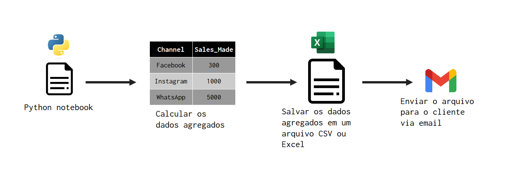
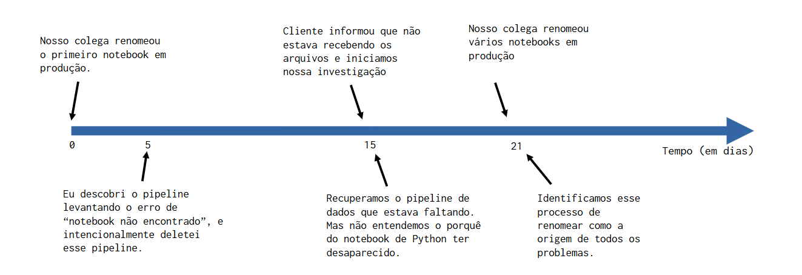

Introdução
Na semana passada, eu e minha equipe nos deparamos com uma situação em que precisávamos descobrir por que e como ocorreu um determinado problema. Precisávamos entender quais decisões levaram a esse problema. Algo bem normal, não é?
Mas entender o que aconteceu só foi possível para nós porque rastreamos cada mudança e cada decisão que tomamos com o Git, assinando commits e escrevendo Pull Requests (ou PRs para abreviar). Este artigo usa essa situação do mundo real que enfrentamos para mostrar como o Git e os processos formais para registrar alterações na base de código (como PRs) são uma parte crítica para melhorar a tomada de decisões e entender como suas decisões passadas estão afetando você no presente.
Começo o artigo descrevendo qual foi o problema que nós enfrentamos e, na sequência, explico quais erros foram cometidos e como o Git nos ajudou a identificar esses erros.
Qual é o argumento deste artigo?
Para melhorar o seu processo de tomada de decisão, você precisa primeiro se lembrar de quais foram as decisões que você tomou. Às vezes, essa lembrança se torna uma tarefa realmente difícil.
Diferentes pessoas adotam estratégias diferentes para acompanhar as decisões que tomaram. Algumas pessoas mantêm várias anotações sobre cada decisão, outros, gostam de documentar suas decisões dentro dos cartões (ou cards) criados dentro do quadro kanban de sua equipe. Mas independentemente de qual seja a estratégia que você escolher, ela sempre vai envolver algum tipo (ou nível) de rastreamento e também de documentação dessas decisões que você faz ao longo do caminho.
Neste artigo, mostro um exemplo do mundo real em que o Git e o Pull Request formal desempenharam esse papel. Em outras palavras, este artigo busca mostrar como Git e Pull Requests podem te ajudar a acompanhar as decisões que estão sendo feitas em sua equipe. Quem e por que eles tomaram essas decisões? Quando essas decisões aconteceram? etc.
O pipeline de dados onde ocorreu o problema
O problema ocorreu em um dos muitos pipelines de dados1 que gerenciamos e oferecemos suporte. Esse pipeline de dados específico era um pipeline do tipo “agregar os dados e enviar os resultados ao cliente”. Em detalhes mais técnicos, esse pipeline era um arquivo JSON que continha todos os metadados que descreviam o que era esse pipeline, quais etapas deveriam ser executavas, quais eram as dependências e configurações de cada tarefa, em que horário específico do dia essas tarefas deveriam ser executadas, etc.
A principal etapa (ou tarefa) executada nesse pipeline era a execução de um notebook de Python. Este notebook estava executando as seguintes etapas:
- agregar os dados brutos para obter o total de vendas feitas por canal.
- salva o resultado em um arquivo CSV ou Excel.
- enviar este arquivo CSV ou Excel por e-mail para o cliente.
O diagrama a seguir mostra essas etapas de maneira visual:

Qual foi o problema que ocorreu?
Um dia, nosso cliente nos notificou dizendo que não estava recebendo os arquivos CSV há cerca de uma semana. Então começamos a procurar por esse pipeline de dados, com o objetivo de verificar os seus logs de execução. Contudo, nós simplesmente não encontramos nada! Tanto o notebook Python quanto o arquivo JSON que descrevia o próprio pipeline de dados desapareceram! É como se eles nunca tivessem existido.
Não ter o notebook Python era a mesma coisa que não ter pipeline nenhum. Os arquivos Python e JSON simplesmente desapareceram de nosso repositório. Mas nós sabíamos que o cliente tinha recebido alguns arquivos a algumas semanas atrás, portanto, tínhamos certeza de que esse pipeline existia em algum momento no passado. Mas para onde ele foi? Por que ele desapareceu?
Investigando os commits
Usamos o Git para armazenar e rastrear quaisquer alterações feitas em todos os nossos pipelines de dados. Em outras palavras, todas as alterações que fazemos nos arquivos JSON que descrevem cada um de nossos pipelines de dados são rastreadas pelo Git. Como você bem sabe, um arquivo simplesmente não desaparece de um repositório Git. Quando um arquivo é removido de um repositório Git, é porque alguém excluiu intencionalmente o arquivo, e criou o commit da alteração no repositório.
Como sabíamos que esse pipeline de dados existia em algum momento, eu comecei a investigar e seguir o histórico de commits. Demorou cerca de 30 minutos para encontrar o commit exato que excluiu o pipeline de dados e, oops! O commit foi criado por mim! Eu excluí o pipeline de dados do nosso repositório. Ok… agora, por quê? Por que eu excluí esse pipeline de dados?
A essa altura, o Git já me ajudou a responder duas questões muito importantes que eram: 1. Quem deletou o pipeline? 2. Quando foi excluído? Pois todo commit que você cria no Git tem um carimbo de data/hora associado a ele e o nome do autor desse commit, sabíamos naquele momento que fui eu quem excluiu o pipeline, a algumas semanas atrás.
Por que tomei essa decisão?
Mas isso por si só não responde a outra parte do problema. Ainda precisamos saber o porquê tomei essa decisão. Por que excluí intencionalmente este pipeline? Este é o ponto onde Pull Requests2 podem nos ajudar.
Sempre que quisermos publicar alguma alteração que fizemos em um pipeline de dados, precisamos documentar essa alteração em um PR. Descrevemos quais mudanças foram feitas e por que as fizemos. Encontrei o PR associado que continha o commit que fiz e, na descrição desse PR, descobri o motivo pelo qual excluí o pipeline.
O pipeline estava constantemente falhando com um erro de “notebook não encontrado”. Em outras palavras, o pipeline estava tentando acionar a execução do notebook Python que mencionei anteriormente. Porém o notebook em si não foi encontrado, e por conta disso, estava dando esse erro. Isso significa que o pipeline era basicamente inútil, ele estava criando custos de execução sem entregar nenhum valor. Isso também significa que o notebook Python desapareceu antes que o pipeline fosse excluído.
Então eu apaguei o pipeline. Dessa forma, nós deixamos de gastar nossos recursos tentando executar algo que sabemos que vai gerar um erro de execução, e, consequentemente, não vai gerar nenhum valor.
A outra parte do problema
Ok, agora sabemos o porquê de eu ter excluído o pipeline. Mas isso por si só levanta algumas novas questões. Por que o notebook Python desapareceu? Todavia, a realidade é que… não sabíamos o porquê. Infelizmente, nossos notebooks Python não estavan hospedados em um repositório Git. Isso significa que não nenhuma alteração feita no notebook era rastreada.
Porém, para ser justo, nossos notebooks Python são hospedados dentro de uma instância do Databricks e, se você estiver familiarizado com o Databricks, saberá que, na verdade, a plataforma Databricks rastreia sim (até certo ponto) alterações feitas no notebook, através do painel de “Revisions”.
Então, sim, temos algum nível de monitoramento sobre as alterações feitas nesses notebooks. Mas não temos um nível suficiente para realmente entendermos por que aquele caderno em particular estava faltando. Em outras palavras, esse painel de “Revisions” do Databricks não é capaz de rastrear ações de remoção em notebooks.
Nós só conseguimos descobrir o que estava acontecendo na semana seguinte, quando identificamos que outros notebooks de Python também haviam sumido misteriosamente da pasta do mesmo cliente. Era um conjunto de três notebooks, chamados Job_ClientX_Opened_Sessions, Job_ClientX_Sales_per_Channel e Job_ClientX_Opened_Tickets. Esses três notebooks estavam localizados na pasta ClientX. Então, tínhamos uma estrutura de arquivo como esta:
├───📁 ClientX
│ ├───Job_ClientX_Opened_Sessions.py
│ ├───Job_ClientX_Sales_per_Channel.py
│ └───Job_ClientX_Opened_Tickets.py
│
├───📁 ClientY
├───📁 ClientW
└───📁 ClientZ
...Nesse dia específico, descobrimos através dos logs de execução que, por volta das 08:00 AM, esse conjunto de notebooks estava sim disponíveis (ou seja, eles existiam de fato) em nosso ambiente Databricks por volta das 08:00. Mas nesse mesmo dia, quando nós procuramos novamente às 11:00 por esses mesmos notebooks no ambiente Databricks, não os encontramos mais.
Sabíamos naquele momento que esses notebooks haviam desaparecido nas últimas 3 horas. Era algo muito recente. Contudo, um detalhe chamou a nossa atenção. A pasta ClientX, que era onde deveriam estar esses notebooks, estava preenchida com outros notebooks que possuíam nomes semelhantes aos que estávamos procurando, como estes:
├───📁 ClientX
│ ├───[ClientX] Opened sessions.py
│ ├───[ClientX] Sales per Channel.py
│ └───[ClientX] Opened Tickets.py
│
├───📁 ClientY
├───📁 ClientW
└───📁 ClientZ
...A princípio, isso parecia muito estranho para nós, pois esses nomes iam contra as nossas convenções de nomenclatura. Ou seja, eu e minha equipe não nomeamos arquivos dessa forma. Então, novas desconfiança surgiram, e levantamos a seguinte hipótese: “espere! Acho que alguém está renomeando esses notebooks”. Mais tarde naquele dia, nossas suspeitas foram confirmadas. Um colega de fora de nossa equipe estava renomeando intencionalmente os notebooks de Python desse cliente que foram publicados no ambiente de produção. Por isso não estávamos encontrando mais os notebooks, pois os seus nomes foram modificados.
A consequência imediata dessa ação de nosso colega foi que a conexão entre os notebooks de Python e os pipelines de dados foi perdida. Ou seja, os pipelines de dados estavam tentando executar esses notebooks, mas esses pipelines não estavam encontrando mais esses notebooks, pois os seus nomes originais foram perdidos.
Se usássemos o Git para rastrear todas as alterações feitas nesses notebooks de Python, talvez nós teríamos descoberto esse problema muito mais cedo, e, com isso, poderíamos agir para corrigi-lo. Porém o estrago já havia sido feito. Como próximos passos, o nosso time teve que:
- renomear os notebooks de volta para os seus nomes originais;
- remover alguns dos privilégios de nosso colega no ambiente Databricks;
- aconselhar este colega sobre o que aconteceu e como as suas ações causaram danos.
Quais erros foram cometidos?
Abaixo temos a linha do tempo dos eventos importantes que descrevemos até aqui:

Na minha cabeça, existem pelo menos três erros que foram cometidos ao longo desta linha do tempo:
- Eu não comuniquei a retirada do pipeline de forma adequada;
- Nosso colega estava renomeando notebooks em um ambiente de produção;
- Não usamos o Git para rastrear alterações nos notebooks no ambiente de produção.
Excluir o pipeline não foi um erro. Na realdiade, o meu erro foi não comunicar a minha ação da forma adequada. Quer dizer, eu comuniquei a remoção do pipeline aos meus colegas, mas eu não comuniquei essa remoção ao meu colega de fora da minha equipe que também estava envolvido com esse cliente específico, o mesmo colega que começou a renomear vários notebooks em produção.
Em outras palavras, se eu tivesse comunicado a ele que excluí o pipeline, provavelmente o seguinte diálogo teria acontecido:
Colega: “espere! Nosso cliente ainda está usando esse pipeline de dados, por que você o removeu?”
Eu: “porque o pipeline não estava encontrando o notebook”
Colega: “mas porque ele não estava achando o notebook?”
Eu: “bom, o pipeline está procurando um notebook chamado ‘X’, mas esse notebook sumiu. Não existe em nosso ambiente”.
Colega: “espere! Eu me lembro deste caderno! Acho que acabei de renomeá-lo há alguns dias”
Eu: “espere! Você renomeou um notebook em produção?”
Colega: “sim, acho que sim”
Com este diálogo, provavelmente poderíamos ter resolvido o quebra-cabeça muito mais rapidamente e corrigido os erros antes que mais danos pudessem ser criados. Portanto, se eu tivesse comunicado a esse colega que excluí o pipeline, provavelmente atingiríamos o cerne do problema mais rapidamente.
Tudo começou quando esse nosso colega decidiu renomear um notebook diretamente no ambiente de produção sem que soubéssemos. Isso com certeza foi um erro, mas quem não erra as vezes né? Além disso, como descrevemos no artigo, o sistema de “Revisions” do Databricks é limitado e não foi capaz de gravar essa mudança tão importante no notebook e, por causa disso, nós inicialmente ficamos no escuro. Nós não tínhamos ideia do que havia acontecido com o notebook.
Levamos uma semana para realmente descobrir o que estava causando o “desaparecimento” dos notebooks. Se usássemos o Git para rastrear todas as alterações feitas nos notebooks publicados no ambiente de produção, nós teríamos identificado a “ação de renomear” muito, muito, muito mais rápido. Portanto, não usar o Git nesses notebooks também foi um erro.
Como o Git nos ajudou a resolver o problema
O Git é uma ferramenta extremamente poderosa. Ao termos um servidor centralizado que registra todas as mudanças que cada pessoa faz no projeto, conseguimos olhar para o passado, e entender quais mudanças foram feitas. Você pode realmente ver a evolução ou a linha do tempo do seu projeto e perceber quantos recursos ou melhorias você fez no projeto. Você também pode identificar as decisões que tomou no passado. Isso lhe dá a capacidade de repensar o seu processo de tomada de decisão.
Um fato que sabíamos desde o início: um pipeline de dados e um notebook de Python simplesmente desapareceram de nosso ambiente. Com o Git conseguimos rastrear e entender como, quando e por que o pipeline de dados desapareceu, e conseguimos localizar o pipeline de dados novamente, restaurá-lo ao seu estado anterior e reenviar os arquivos que o nosso cliente precisava. Se usássemos o Git nos notebooks, também poderíamos rastrear as operações de “renomear” que haviam sido feitas nesses notebooks.
Nós não apenas corrigimos o problema, mas também, ao entender o que aconteceu e quais decisões foram tomadas que levaram ao desaparecimento do pipeline de dados, pudemos identificar as falhas em nosso processo de tomada de decisão. E ao identificar esses problemas, agora podemos resolvê-los, para não cometermos esses erros novamente.
Footnotes
O que é um pipeline? Um pipeline é apenas uma sequência de etapas (ou tarefas) a serem realizada em uma hora específica do dia (ou em um dia específico da semana ou do mês, etc.). E um pipeline de dados é um pipeline que contém tarefas que carregam, transformam, enviam ou ingerem dados de alguma forma.↩︎
Em resumo, um Pull Request (ou PR) é uma proposta para realizar uma operação
git merge. Em outras palavras, você cria um PR quando deseja mesclar as alterações feitas em uma branch em outra branch (na maioria das vezes a main branch). O aspecto de “proposta” de uma PR significa que este PR precisa ser aprovado para ser efetivamente executado. Um PR não é um recurso do Git. Na verdade, é um recurso padrão da maioria dos provedores de serviços Git. Então você cria um PR dentro de uma plataforma de serviços Git como GitHub, GitLab e Azure DevOps, e não dentro do próprio Git. Se você não está familiarizado com PRs, a documentação do GitHub tem um excelente artigo sobre isso.↩︎